< Back to Projects
Overview:
Hamley’s is the world's oldest toy retailer . While going through its website I felt there was a room for improvement in the UI so I took up the challenge and redesigned it to make it look more organized and user friendly
Design process:
Reasearch And Understandings
The website followed a theme but there is inconsistency overall. The website needed to be de cluttered for the user to navigate through the website easily.
Competitive Analysis
1. Firstcry.com
a. The target audience of the website is similar to Hamley’s.
b. The UI for the website is better but it is still distracting all the areas demand for equal amount of attention.
c. There are too many items on the navigation bar.
2. Funcorp.com
a. The target audience of the website is similar to Hamley’s.
b. The UI is cluttered as all the different brands having different colors are displayed on the center of the front page which makes it look cluttered
c. The UX of the website is similar to Hamley’s website.
User Flow:
a. After Conducting user interviews and analyzing them i found that there is no major issues with the UX of the website except there was no rating section available
b. Almost all the users found the UI very cluttered and uneasy to browse through
Design Principles not followed
a. Hierarchy
b. Consistency
c. Accessibility
Outcome of research:
a. Overwhelming home page
b. Many tabs on Navigation bar
c. Inconsistent fonts
d. Design principles not followed
Goal
a. To simplify the homepage
b. To organize the navigation bar
c. To make the buttons uniform
Ideation
My major Goal was to make the text legible but to keep the essence of the website same so i stuck with the original color theme of the website.
Before designing i created a mood board for the website.
Moodboard
Style Guide:

Visual Design
Major Changes
1. Before
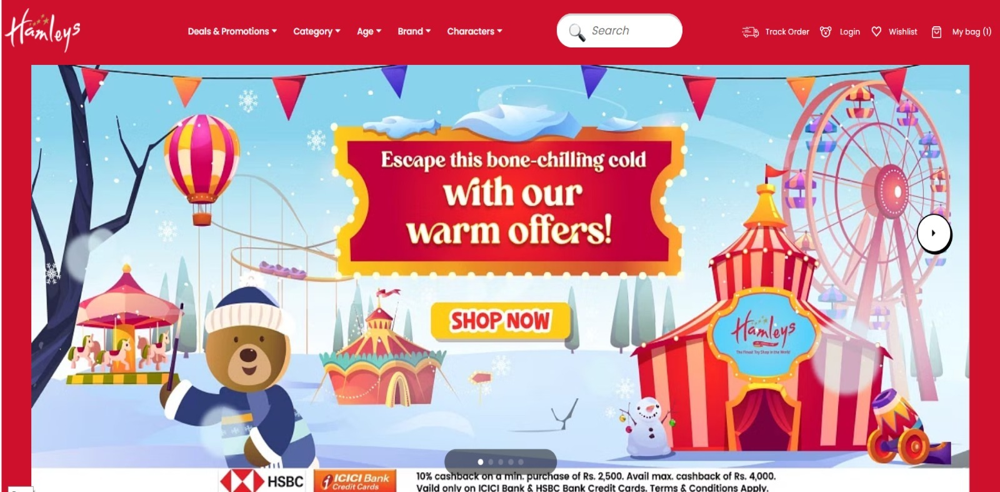
i. Navigation bar is very crowded
ii. Shop Now button is not easily accessible
iii. Search bar is big and icon is inconsistent
iv. The design is very overwhelming
1. After
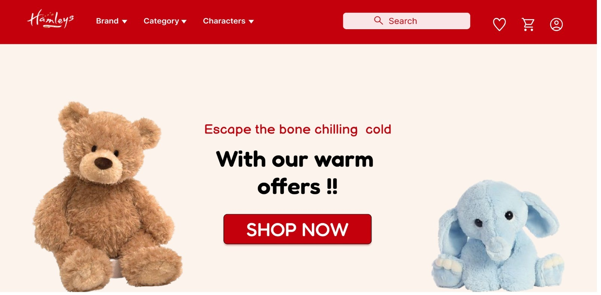
i. Organized the Navigation bar all the components are easy to access (The right side of the Navbar previously consisted of several options which required the user to login so eliminated them and added the login button instead )
ii. User can easily view the shop now button.
iii. The design is minimal showing the products the company sells and is easy on the eyes.
iv. Changed the hierarchy for better user experience.
2. Before
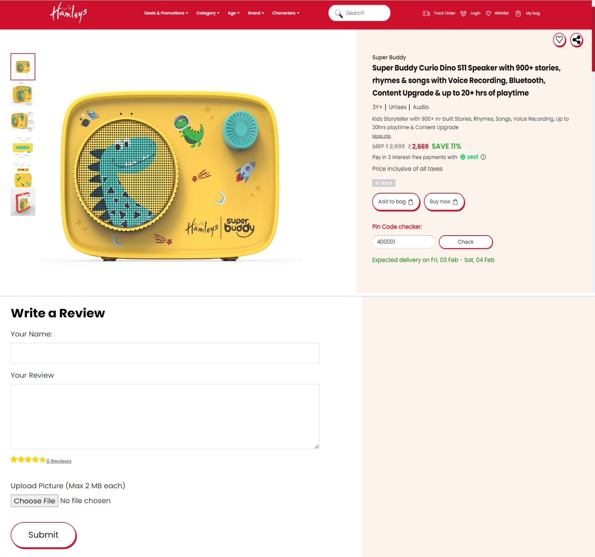
i. The buttons are inconsistent
ii. There is no option to rate
iii. There is no hierarchy in the text
iv. Finding the price of the product is difficult for the user
2. After
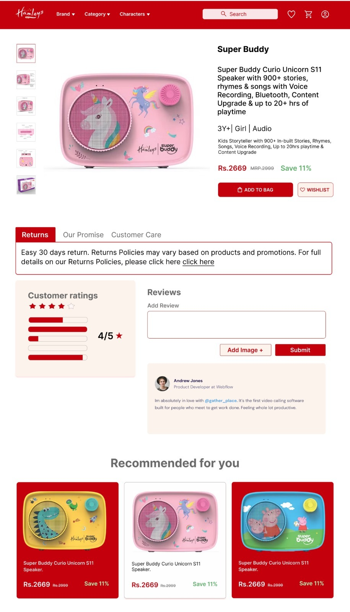
i. All the buttons are consistent, add to bag is highlighted for better user experience.
ii. Rating and reviewing both are possible
iii. The prices are clearly visible
iv. There is hierarchy in the text
Moderate changes
1. Before
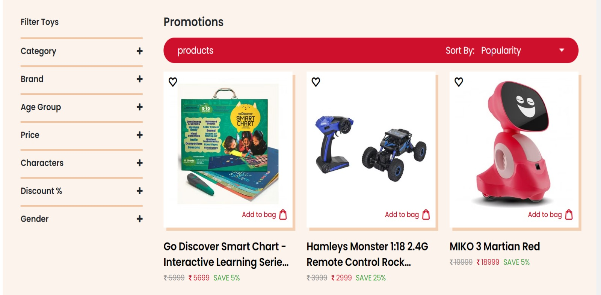
i. The background is distracting
ii. Add to bag icon is comparatively small
iii. The prices are not clearly visible
1. After
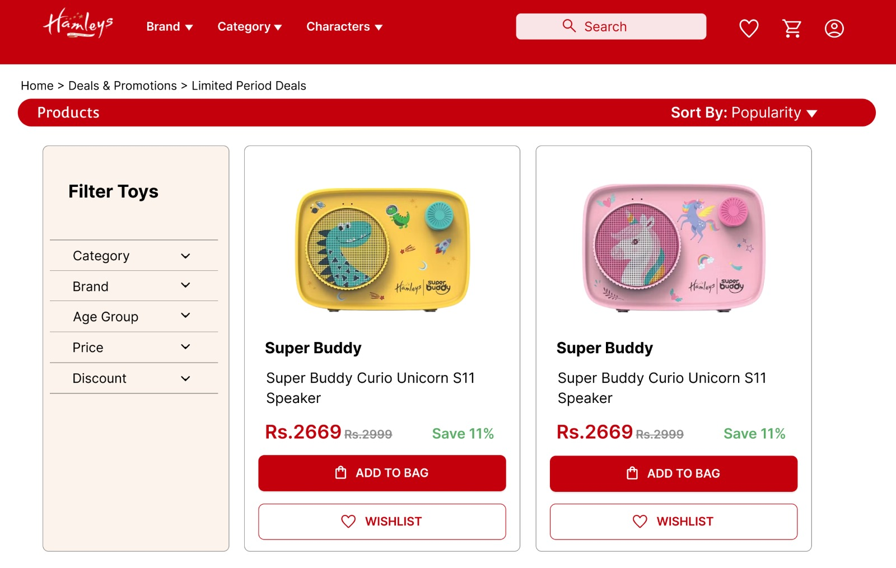
i. Removed the background color
ii. Made the price clearly visible
iii. Made add to bag button more accessible
iv. Clear instructions for the users
Minute Changes
1. Before
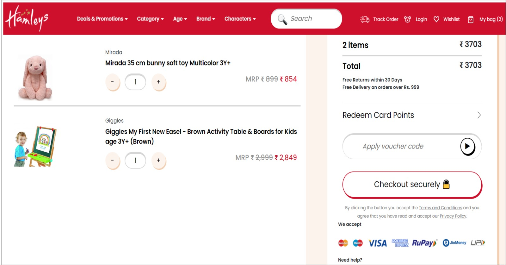
i. It doesn’t show the amount deducted after using the coupon
ii. Inconsistent iconography
iii. The prices are small and not readable
1. After
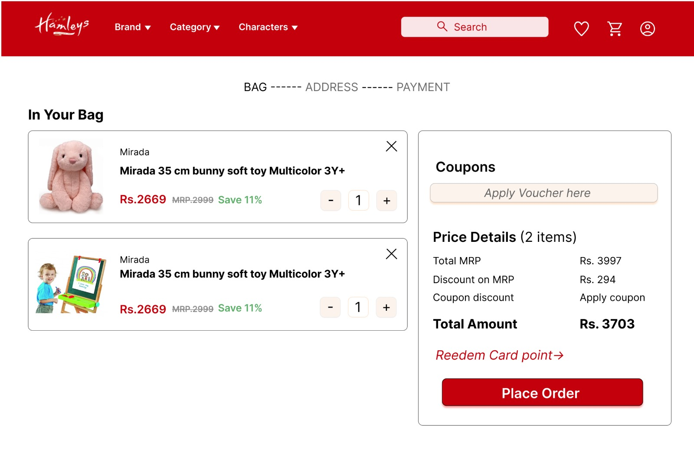
i. Showing the breakdown of the prices
ii. Showing the prices of the items clearly
iii. Showing the process of the transaction at the top
2. Before
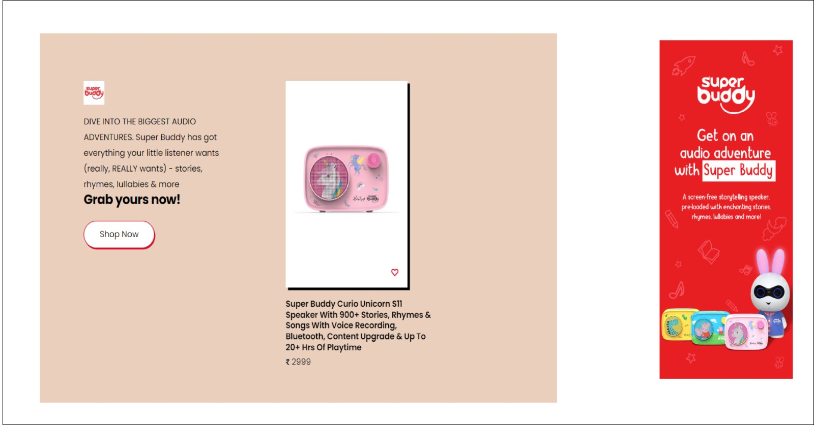
i. No hierarchy
ii. Inconsistent color
2. After
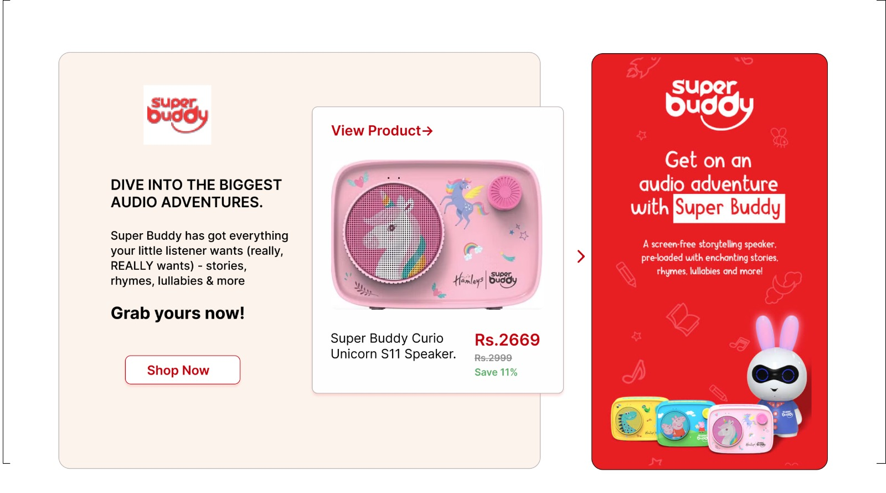
i. Improved hierarchy
ii. Consistent color
Link for the figma Prototype
Conclusion:
During the project i went through many resources, gained knowledge about a lot of things. This was a very insightful journey on how can simple things affect the whole look of website and increase its usability. I enjoyed the process and there is a lot more to learn and improve :)
Here are some attempts before finalizing the design(if you are interested :)
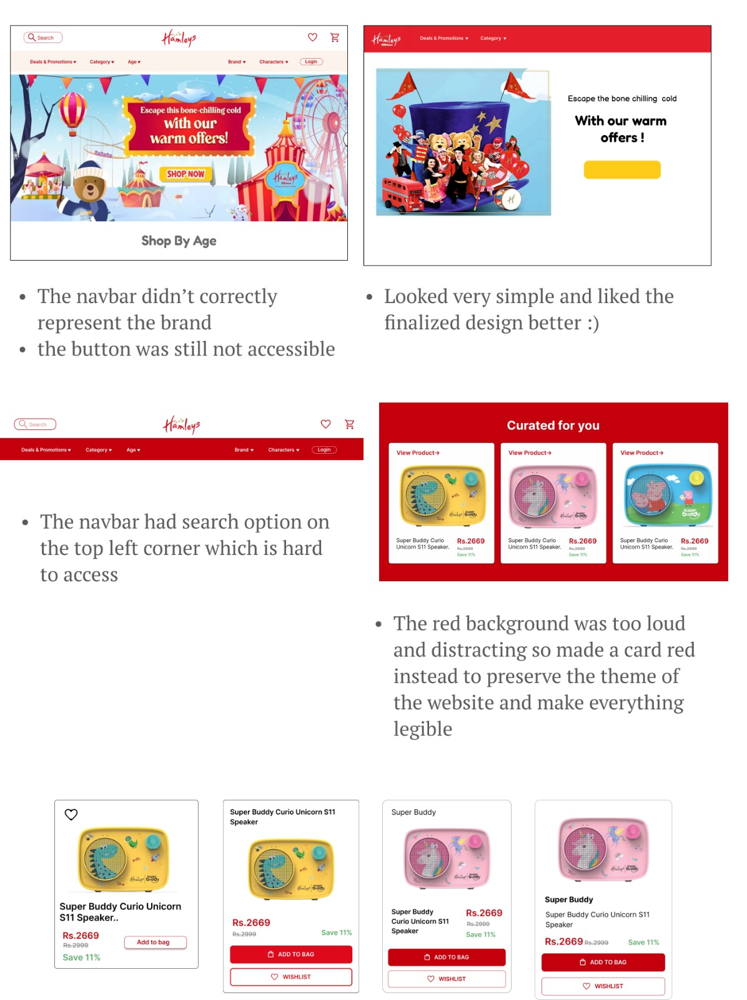Other projects
Medicare
SandwiSh